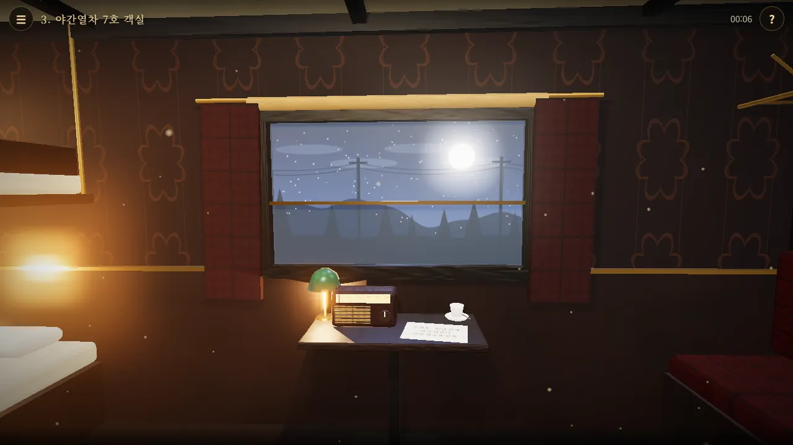
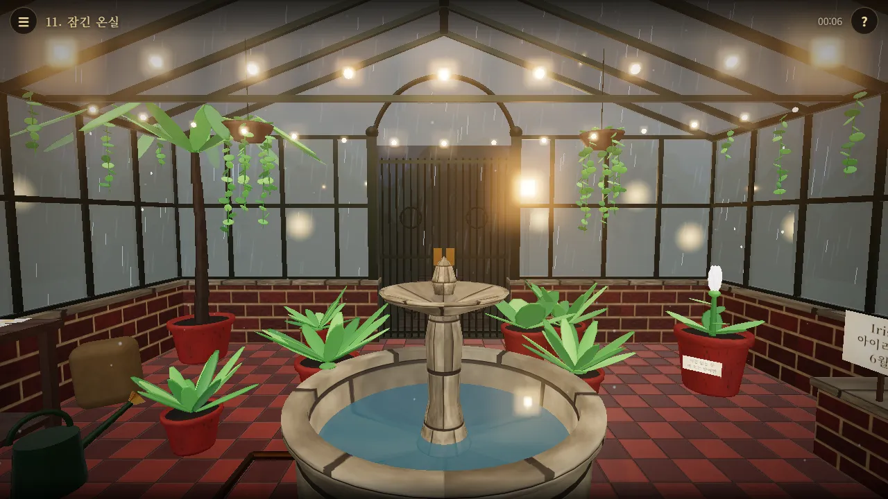
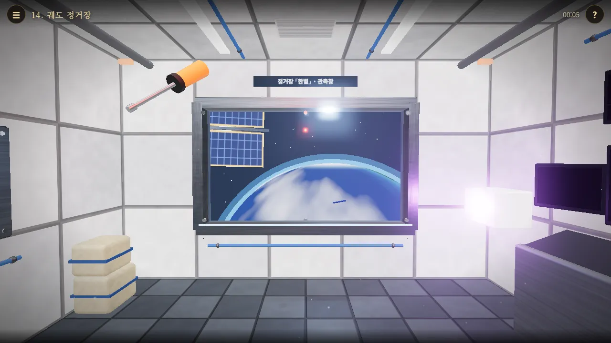
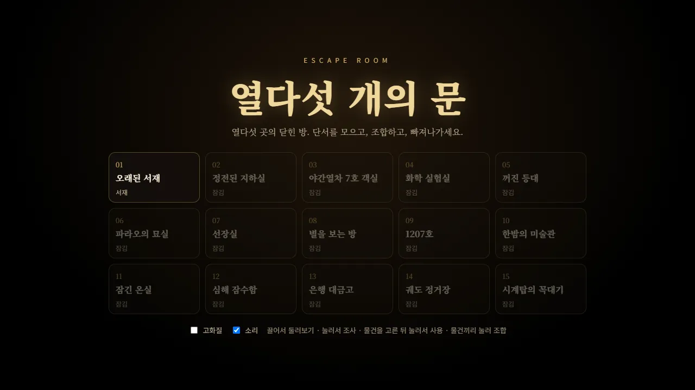

🧩 퍼즐 게임 · 무료 · 설치 없음
열다섯 개의 문
“단서를 모으고, 조합하고, 빠져나가라”
- 방 15곳, 하나씩 열려요
- 한 방 10~20분 안팎
- 막히면 힌트 하나
- 탈출 기록 자동 저장
회원가입 없이 누르면 바로 시작돼요
어떤 게임인가요?
눈을 떠 보니 낯선 서재. 벽난로가 타닥거리고 문은 굳게 잠겨 있어요. 책장, 괘종시계, 벽에 걸린 그림… 방 안 어딘가에 문을 여는 실마리가 숨어 있어요.
한 방을 빠져나가면 다음 방이 기다려요. 정전된 지하실, 달빛 들판을 달리는 야간열차, 폭풍 속 등대, 파라오의 묘실, 흔들리는 해적선 선장실, 별이 쏟아지는 천문대, 비 내리는 온실, 깊은 바닷속 잠수함, 지구가 보이는 궤도 정거장까지, 열다섯 곳이 모두 다른 장소예요.
단서는 쪽지와 그림, 숫자와 기호, 빛과 소리처럼 여러 모습으로 숨어 있어요. 찾은 물건은 가방에 넣고, 서로 합치거나 알맞은 곳에 써서 자물쇠와 장치를 하나씩 풀어 가요.
이렇게 해요
- STEP 1
둘러보고 다가가요
화면을 끌어 방을 둘러보고, 궁금한 곳을 누르면 가까이 다가가요. 빈 곳을 누르거나 「↩ 뒤로」를 누르면 물러나요.
- STEP 2
물건을 얻고 조합해요
찾은 물건은 아래 가방에 들어가요. 가방 속 물건 두 개를 차례로 누르면 하나로 합쳐지고, 「살펴보기」로 돌려 가며 자세히 볼 수 있어요.
- STEP 3
알맞은 곳에 써서 열어요
가방에서 물건을 고른 뒤 쓸 곳을 누르면 그 자리에 써요. 숫자·글자·색·방향 자물쇠를 풀고 문을 열면 탈출!



🗝️ 열다섯 곳의 방
- 오래된 서재 · 정전된 지하실 · 야간열차 7호 객실 · 화학 실험실 · 꺼진 등대
- 파라오의 묘실 · 선장실 · 별을 보는 방 · 1207호 · 한밤의 미술관
- 잠긴 온실 · 심해 잠수함 · 은행 대금고 · 궤도 정거장 · 시계탑의 꼭대기
- 방마다 걸린 시간이 기록되고, 가장 빠른 기록이 처음 화면에 남아요
앞의 방을 빠져나가야 다음 방이 열려요. 한 번 연 방은 언제든 다시 할 수 있어요.
이런 분께 추천해요
- 차근차근 단서를 이어 붙이는 추리를 좋아하는 분
- 여러 장소를 3D로 구경하며 퍼즐을 풀고 싶은 분
- 친구나 가족과 화면을 같이 보며 머리를 맞대고 싶은 분
막히면 오른쪽 위 ? 를 누르세요. 정답 대신 지금 어디를 보면 좋을지 한 가지를 알려 줘요. 쪽지와 그림은 한 번 더 눌러 크게 보고, 얻은 물건은 「살펴보기」로 뒷면까지 확인해 보세요.
📱 어떤 기기에서 하면 좋을까요?
- 가장 좋아요컴퓨터·노트북 크롬·엣지·웨일
큰 화면에서 방이 가장 잘 보여요. 마우스로 끌어 둘러보고, 휠로 확대하고, 오른쪽 클릭이나 Esc로 물러나요.
- 가장 좋아요태블릿 가로 화면
손가락으로 끌어 둘러보고, 두 손가락으로 벌려 확대해요. 쪽지와 단서가 큼직하게 보여요.
- 괜찮아요휴대폰 가로 화면 추천
할 수는 있지만 단서와 물건이 작아요. 가로로 돌리면 조금 넓게 보여요. 오래된 휴대폰은 3D가 느릴 수 있어요.
오른쪽 위 메뉴(⋮ 또는 ···)에서 「다른 브라우저로 열기」를 눌러 크롬이나 사파리로 열어 주세요. 앱 안에서는 전체 화면이 안 되고 저장이 풀릴 수 있어요.
🍎 아이폰·아이패드에서는
- ① 사파리로 열기
카카오톡이나 네이버 앱 안에서는 화면이 좁고 3D가 느릴 수 있어요. 「다른 브라우저로 열기」나 사파리로 열어 주세요.
- ② 화면을 넓게 쓰기
전체 화면 버튼이 없어요. 주소창 왼쪽의 가가(aA) 버튼 → 「도구 막대 가리기」를 누르면 방을 더 넓게 볼 수 있어요.
- ③ 소리
무음 스위치가 켜져 있으면 효과음이 나지 않아요. 처음 화면의 「소리」 칸으로 켜고 끌 수 있어요.
🤖 갤럭시 등 안드로이드에서는
크롬이나 삼성 인터넷으로 열면 바로 시작할 수 있어요. 3D 그래픽과 글꼴을 인터넷에서 불러오므로 와이파이나 데이터가 연결되어 있어야 해요.
▶ 바로 해 보기
설치도, 회원가입도 필요 없어요.
열다섯 개의 문 시작하기game.edoori.co.kr/escape/